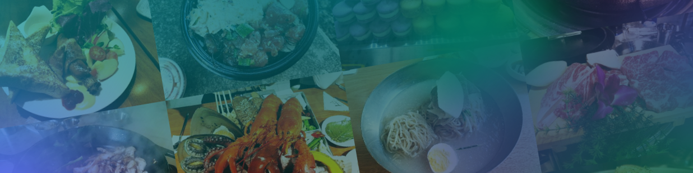

Expertise
Marketing & Business Specialist
Education
Sep, 2022 ~ Aug, 2023
Master of Science in Business Analytics
Hult International Business School San Francisco, CA
- Relevant Courses: Business Analysis with Structured Data, Business Statistics, Data Management & SQL, Python for Data Analysis, Developing Business Acumen, Computational Data Analytics with Python.
- Head of Learning & Development at Hult Consulting Club San Francisco. Shared significance of SQL and statistics in CRM consulting with colleagues.
Mar, 2011 ~ Feb, 2014
Master of Public Administration
University of Seoul Seoul, South Korea
- Specialized in Public Data Analytics
- Relevant Courses: Statistical Social Research Method I & II.
- Thesis: A Study of Measurement and Determinants of Social Capital in Local Community (2014).
- Prize winner in Korea Social Science Data Archive Thesis Award. (Dec 2013).
Experiences
Aug, 2018 ~ Jul, 2021
Founder & CEO
MABLIC Corporation Seoul, South Korea
Founded an innovative restaurant recommendation startup that disrupts traditional rating-based and review-focused approaches. Created a distinctive platform for personalized restaurant suggestions, enhancing user satisfaction and engagement.
- Taste Typology Test and Personalized Recommendations: Developed a taste typology test using structural equation modeling for customer categorization into six indicators. Utilized the taste typology test to drive targeted marketing strategies and provide personalized restaurant recommendations.
- Machine Learning Model for Customer Classification: Implemented a machine learning model for accurate classification of customer groups with similar tastes. Leveraged the machine learning model to enable targeted marketing strategies and customized recommendations.
- Project Management and Strategic Exit: Managed the project timeline for the prototype service launch in 2019 and planned the full-service launch in 2020. Made a strategic exit due to the anticipated impact of COVID-19, ensuring adaptability to market conditions and preserving business viability.
Mar, 2014 ~ Mar, 2018
Vice President of Omni-Channel Lab
MILVUS Seoul, South Korea
Prominent CRM consulting and SaaS development company based in Seoul, South Korea, serving large Korean enterprises (Samsung, LG Electronics, Amore Pacific) and multinational corporations (BMW, TOYOTA, Titleist, GUERLAIN, adidas). Trusted partner delivering tailored CRM solutions for diverse industry leaders.
- CRM Data Consulting: Conducted various analytical techniques including customer segmentation, RFM analysis, customer value analysis, shopping cart analysis, and customer survey analysis. Derived business insights and provided consultation on key KPIs and CRM management strategies for clients in the cosmetics, sportswear, fast food, and family restaurant industries.
- Predictive Modeling: Analyzed customer churn, media advertising effectiveness, new product launches, and sales trends using statistical models such as time series, linear, and logistic models. Extracted insights and actionable recommendations from the data to drive strategic decision-making. Conducted advanced statistical analysis on CRM data for international clients across diverse industries. Provided periodic business analytics reports with actionable insights, data visualization, and CRM strategy recommendations to over 10 clients.
- Reporting & Communications: Facilitated effective communication between the analytics team and client representatives. Translated detailed analytics findings into easily understandable language and delivered presentations to executives for major analytics projects. Ensured clear and concise communication of complex information, fostering collaboration, and enabling data-driven decision-making.
- Business Development & Team Leadership: Led the expansion of the company's services by establishing a software development business. Founded the Omni-Channel Lab, a research department consisting of engineers and data scientists. Resulted in enhanced capabilities, business growth, and industry leadership. Gained a 100% increase in monetizing revenue by operating and maintaining previously developed solutions.
- System Design: Developed a cutting-edge CRM Software-as-a-Service (SaaS) solution with advanced machine learning techniques and a powerful channel marketing function. Enhanced CRM team efficiency and delivered customized solutions for optimal client satisfaction.